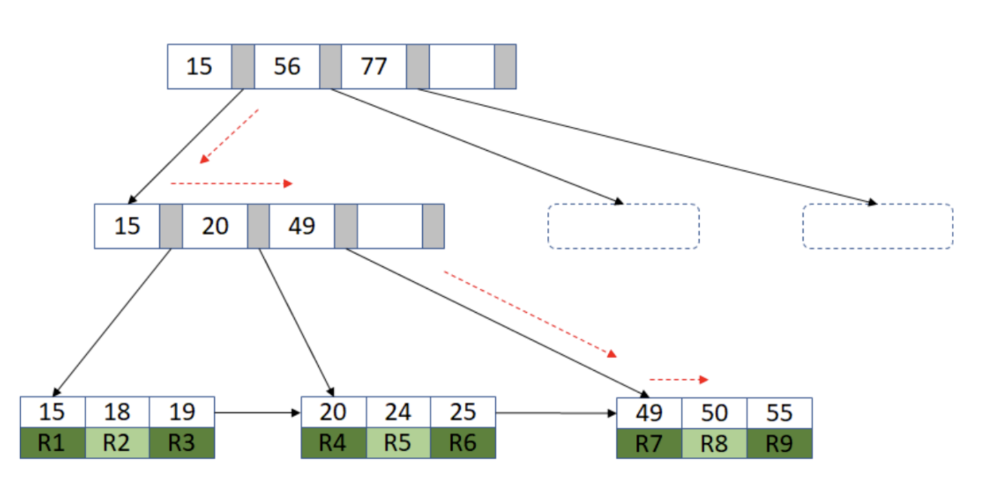
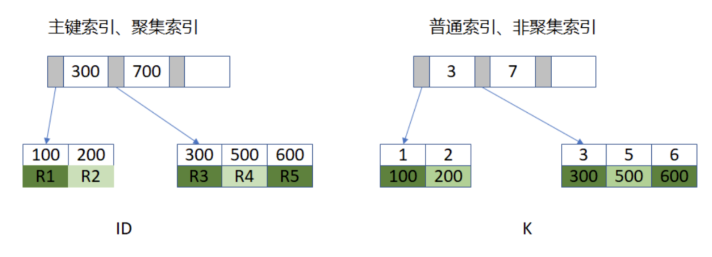
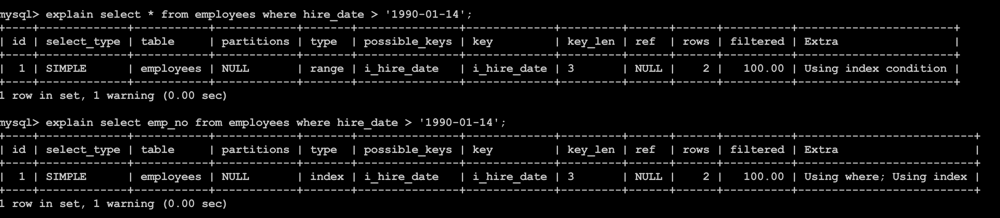
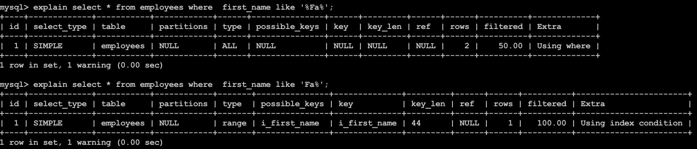

索引的目的是提高查找效率，对数据表的值集合进行了排序，并按照一定数据结构进行了存储。
一、索引
在关系数据库中，索引是一种单独的、物理的对数据库表中一列或多列的值进行排序的一种存储结构，它是某个表中一列或若干列值的集合和相应的指向表中物理标识这些值的数据页的逻辑指针清单。索引的作用相当于图书的目录，可以根据目录中的页码快速找到所需的内容。
索引的目的是提高查找效率，对数据表的值集合进行了排序，并按照一定数据结构进行了存储。
二、索引的数据结构
在 mysql 中，索引是在存储引擎层实现，不同的存储引擎有不同的实现方式。常见的有序数组、Hash 和搜索树， Innodb 的引擎支持的 B+tree。
有序数组
数组是一种常见和重要的数据结构。有序数组是以 Key 的递增顺序保存数据在数组中。非常适合等值查询和范围查询。
 需要查询特定 ID 值的 name，用二分法就可以快速得到，时间复杂度是
需要查询特定 ID 值的 name，用二分法就可以快速得到，时间复杂度是 O(logn)。
// 二分查找递归实现方式
int binary_search(const int arr[], int start, int end, int key)
{
if (start > end)
return -1;
int mid = start + (end - start) / 2;
if (arr[mid] > key)
return binary_search(arr, start, mid - 1, key);
else if (arr[mid] < key)
return binary_search(arr, mid + 1, end, key);
else
return mid;
}
其缺点也很明显。其只适合静态数据，如遇到有数据新增插入，则就会需要数据移动（新申请空间、拷贝数据和释放空间等动作），这将非常消耗资源。
Hash
哈希表是一种以键-值存储数据的结构，我们只需要输入键，就可以找到对应的值。哈希表适用于等值查询的场景，缺点是：对应范围查询则无能为力。

二叉搜索树
二叉搜索树，也称为二叉查找树、有序二叉树或排序二叉树，是指一颗空树或者具有以下性质的二叉树：
若任意节点的左子树不空，则左子树上所有节点的值均小于它的根节点的值； 若任意节点的右子树不空，则右子树上所有节点的值均大于或等于它的根节点的值； 任意节点的左、右子树也分别为二叉查找树；

二叉搜索树相比于其它数据结构的优势在于查找、插入的时间复杂度较低，为 O(logn)。
为了维持 O(logn) 的查询复杂度，需要保持这棵树是平衡二叉树。
二叉搜索树的查找算法：
- 若 b 是空树，则搜索失败，否则：
- 若 x 等于 b 的根节点的值，则查找成功；否则：
- 若 x 小于 b 的根节点的值，则搜索左子树；否则：
- 查找右子树。
相对于有序数组和 Hash，二叉搜索树在查找和插入两端的表现都非常不错。
B+tree
Innodb 存储引擎支持 B+tree 索引、全文索引和哈希索引
B+ 树主要理解数据组织形式和查找算法即可。

B+tree 的 3 个优点:
- 层级更低，IO 次数更少。
- 每次都需要查询到叶子节点，查询性能稳定。
- 叶子节点形成有序链表，范围查询方便。
查找
由根节点自顶向下遍历树，根据分离值在要查找的一边的指针；在节点内使用二分查找来确定位置。
插入

删除

填充因子（innodb_fill_factor）：索引构建期间填充的每个 B+tree 页面上的空间百分比，其余空间保留给未来索引增长。从插入和删除操作中可以看到填充因子的值会影响到数据页的 split 和 merge 的频率。将值设置小些，可以减少 split 和 merge 的频率，但是索引相对会占用更多的磁盘空间；反之，则会增加 split 和 merge 的频率，但是可以减少占用磁盘空间。Innodb 对于聚集索引默认会预留 1/16 的空间保证后续的插入和升级索引。
三、Innodb B+tree 索引
从 Innodb 的角度了解如何使用 B+tree 构建索引，索引如何工作和如何使用索引提升查找效率
聚集索引和非聚集索引
数据库中的 B+tree 索引可以分为聚集索引和非聚集索引。聚集索引和非聚集索引的不同点在于叶子节点是否是完整行数据。
聚集索引就是按照每张表的主键构造一棵 B+tree，叶子节点存放的是表的完整行记录。
非聚集索引的叶子节点不包含行记录的全部数据。
Innodb 存储引擎的非聚集索引的叶子节点的内容为主键索引。
若数据表没有主键聚集索引是怎么建立的？在没有主键时 Innodb 会给数据表的每条记录生成一个 6 个字节长度的 RowId 字段，会以此建立聚集索引。
Select 语句查找记录的过程
create table t_ks_index (
ID int primary key,
k int NOT NULL DEFAULT 0,
s varchar(16) NOT NULL DEFAULT '',
index k(k)
) engine=InnoDB DEFAULT CHARSET=utf8;
insert into t_ks_index values(100, 1, 'aa'),(200, 2, 'bb'),(300, 3, 'cc'),(500, 5, 'ee'),(600,6,'ff'),(700,7,'gg');

左边是以主键 ID 建立起的聚集索引，其叶子节点存储了完整的表记录信息；右边是以普通字段 K 建立的普通索引，其叶子节点的值是主键 ID。
select * from t_ks_index where k between 3 and 5;
执行过程：
- 在 K 索引树上找到 k=3 的记录，取得 ID=300；
- 再到 ID 索引树上查找 ID=300 对应的 R3；
- 在 k 索引树取下一个值 k=5，取得 ID=500；
- 再回到 ID 索引树查到 ID=500 对应的 R4；
- 在 k 索引树取下一个值 k=6，不满足条件，循环结束。
这个过程出现了回表，即回到主键索引树搜索的过程。避免回表操作是提升 SQL 查询效率的常规思路及重要方法。
覆盖索引
MySQL 只需要通过索引就可以查找和返回查询所需要的数据，而不必在使用索引处理数据之后再进行回表操作。
覆盖索引可以一次性完成查询工作，有效减少IO，提高查询效率。也就是说，查询的列和索引的列一致，可以使用覆盖索引，查询中应该尽量使用覆盖索引
索引 K 中包含了查询语句所需要的字段 ID 的值，无需再次回到主键索引树查找，也就是“覆盖”了我们的查询需求，我们称之为覆盖索引。覆盖索引可以减少树的搜索次数，显著提升查询性能。
如：
CREATE TABLE `employees` (
`emp_no` int(11) NOT NULL,
`birth_date` date NOT NULL,
`first_name` varchar(14) NOT NULL,
`last_name` varchar(16) NOT NULL,
`gender` enum('M','F') NOT NULL,
`hire_date` date NOT NULL,
PRIMARY KEY (`emp_no`),
KEY `i_first_name` (`first_name`),
KEY `i_hire_date` (`hire_date`)
) ENGINE=InnoDB DEFAULT CHARSET=utf8;
insert into employees values(100,'1990-01-14' , 'Li', 'Lei','F', '2011-04-24'),(101,'1991-03-04' , 'Fang', 'Hui', 'M','2012-04-18');
两个 SQL 语句，
-- A
explain select * from employees where hire_date > '1990-01-14';
-- B
explain select emp_no from employees where hire_date > '1990-01-14';

explain 的结果可以看到 SQL 语句 A 的 extra 为 Using index condition。是索引下沉了。
B 使用了索引。索引中包含了查询语句所需要的字段 ID 的值，无需再次回到主键索引树查找，也就是“覆盖”了我们的查询需求，我们称之为覆盖索引。覆盖索引可以减少树的搜索次数，显著提升查询性能。
最左匹配
-- A
explain select * from employees where first_name like '%Fa%';
-- B
explain select * from employees where first_name like 'Fa%';

SQL 语句 A 使用了极端方式: first_name like ‘%Fa%’，前后都增加模糊匹配使得 SQL 语句无法使用到索引。
语句 B 就使用了索引。最左匹配可以是字符串索引的最左 N 个字符，也可以是联合索引的最左 M 的字段。合理规划、使用最左匹配可以减少索引，从而节约磁盘空间。
索引下推
在 MySQL5.6 之前，通过使用非主键索引进行查询的时候，存储引擎通过索引查询数据，然后将结果返回给 MySQL server 层，在 server 层判断是否符合条件。
在 MySQL5.6 及以上版本，可以使用索引下推的特性。当存在索引的列做为判断条件时，MySQL server将这一部分判断条件传递给存储引擎，然后存储引擎会筛选出符合MySQL server传递条件的索引项，即在存储引擎层根据索引条件过滤掉不符合条件的索引项，然后回表查询得到结果，将结果返回给MySQL server。
可以看到，有了索引下推的优化，在满足一定的条件下，存储引擎层会在回表查询之前对数据进行过滤，可以减少存储引擎回表查询的次数。
当 Extra 列的值为 Using index condition，则表示使用了索引下推。
如：

四、常见的索引失效场景
- 查询条件使用函数在索引列上 。
- 隐式转换导致索引失效。
- 对索引列进行运算。
- 使用like，like 查询是以%开头。
- 不符合复合索引 “最左前缀”原则。
- 用 or 分割开的条件，若 or 前的条件中的列有索引，而后面列中没有索引。
- 使用
NOT IN和<>操作。
参考：